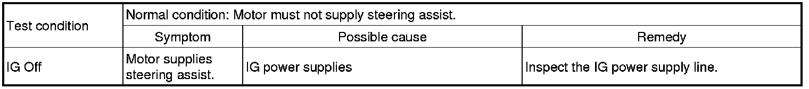
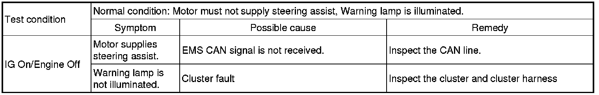
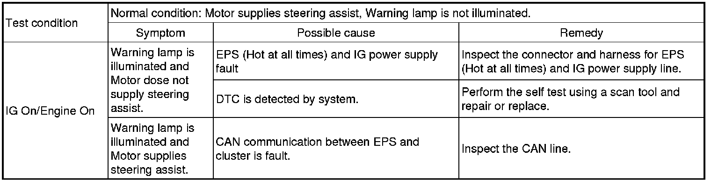
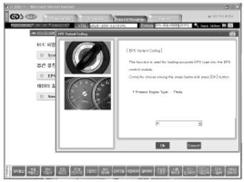
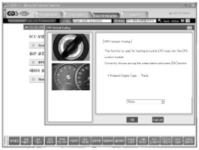

Repair Procedures
General Inspection
After or before servicing the EPS system, perform the troubleshooting and test procedure as follows. Compare the system condition with normal condition in the table below and if abnormal symptom is detected, perform necessary remedy and inspection.



CAN: Controller Area Network
EMS: Engine Management System
CAUTION:
The following symptoms may be occurred during normal vehicle operation and if there is no EPS warning light illumination, it is not malfunction of EPS system.
- After turning the ignition switch on, the steering wheel becomes heavier while it performs EPS system diagnostics, for about 2 seconds, then it becomes normal steering condition.
- After turning the ignition switch on or off, EPS relay noise may occur but it is normal.
- When it is steered, while the vehicle is stopped or in low driving speed, motor noise may occur but it is normal operating one.
Scan tool (Hi-Scan Pro) installation
1. Attach the CAN interface module to the Hi-Scan Pro main body and securely tighten the two bolts.
2. Install the CAN interface module to the Data Link Cable and securely tighten the two bolts.
EPS Type Recognition Procedure
1. Select "EPS Variant Coding".
2. Proceed with the test according to the screen introductions.

